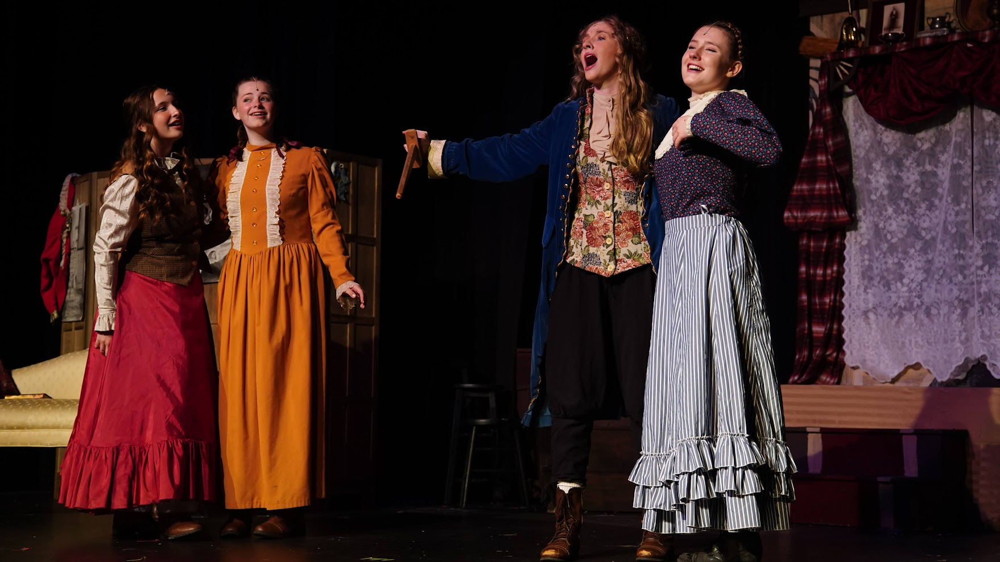
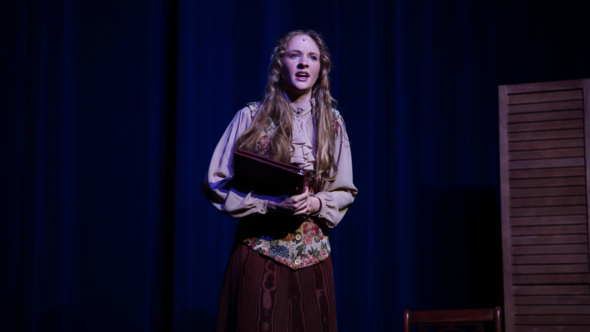
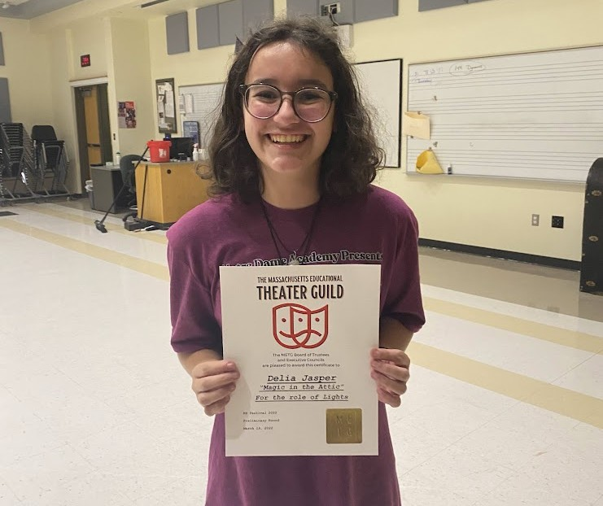
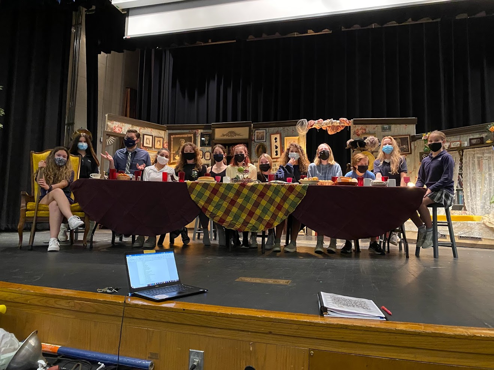
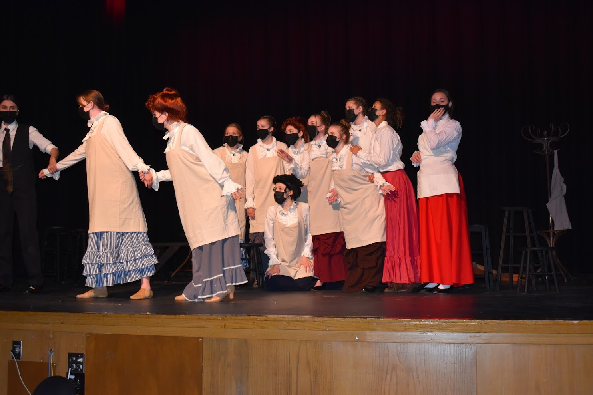
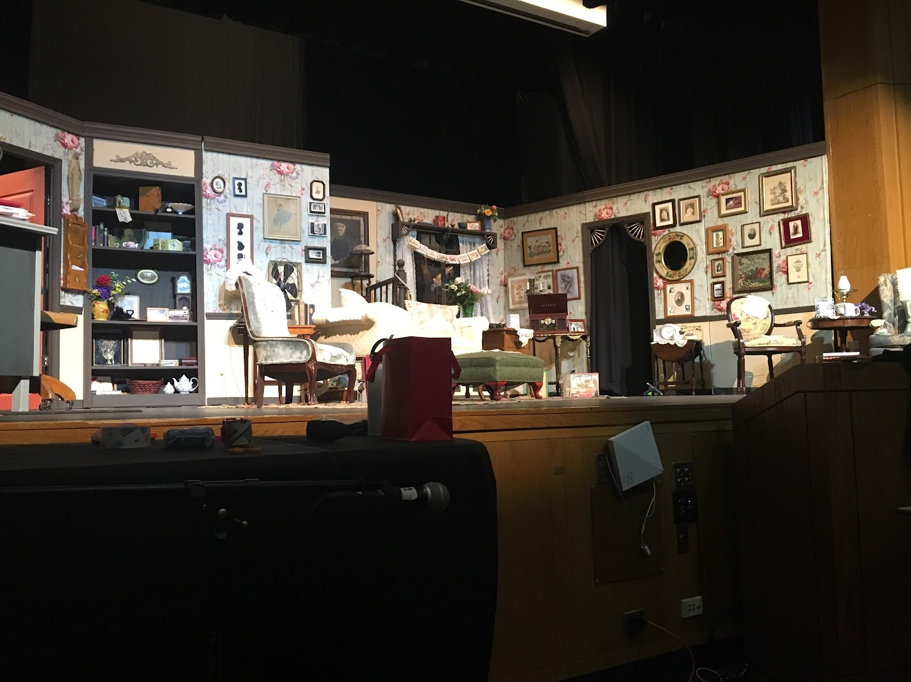

Pre-College Theatre
Archive of past theatre experience, including roles as student director, stage manager, and lighting designer across multiple productions.
Overview
My high school's theatre program was very small, with outdated technology and very little funding. However, I am very passionate about theatre and wanted to be involved in any way I could. Usually, I was one of the only or the only student involved in the technical side of the productions, which meant that I had to learn how to do anything needed myself, and figure out how to make things work with very limited resources.
This section is an archive of my theatre experience before college, which has been a huge part of my life and has shaped how I think about all technical aspects of a production, documentation, communication, and execution under pressure.
Some of my favorite projects included repairing and connecting an older, nicer lighting board to our lighting system; running many productions at Massachusetts Educational Theatre Guild (METG) festival, being responsible for all technical aspects of the production; and winning technical awards at both METG festivals I attended.
Little Women


This was my junior year of high school's spring musical produced in May 2022.
- Role: Lighting Designer
- Duties: Design and operate the lighting for the production. Additionally, repaired and allow for an old Phillips Strand light board and the 4 LED lights our school owned to once again be connected to the lighting system.
Magic in the Attic

This was my junior year of high school's winter festival one-act produced in March 2022.
- Award: METG All Star Technical Excellence
- Role: Stage Manager / Lighting Designer
- Duties: Oversee all technical aspects of the production, including rehearsals, all technical elements pre-show, set-up and coordination day of at METG Festival, and lighting design and board operation.
You Can't Take it With You

This was my junior year of high school's fall play produced in November 2021.
- Role: Stage Manager
- Duties: Communicate with all members of the cast and crew to ensure the show runs smoothly, schedule rehearsals, blocking notation, provide assistance with set building, costumes, props, lighting, and sound.
The 146 Point Flame

This was my sophomore year of high school play, the only play this year due to COVID-19, produced in May 2021.
- Role: Stage Manager
- Duties: Communicate with all cast and crew members, schedule rehearsals, blocking notation, source and provide technical assistance in props, costumes, hair & makeup, scenic building, and sound.
Vintage Hitchcock
This was my freshman year of high school's spring virtual play produced in June 2020, due to COVID-19.
- Role: Student Director
- Duties: Ensure the play runs smoothly, coordinate rehearsals, and manage all aspects of the production.
Anybody for Tea?

This was my freshman year of high school's winter festival one-act play produced in February 2020. This was the first show I ever stage managed.
- Award: METG Stage Manager's Award
- Role: Stage Manager
- Duties: Ensure set set-up is compelted in under 5 minutes (METG rule), communicate with all members of the production to coordinate rehearsals, keep track of all technical elements during performances and run sound effects, make sure that everyone stays on schedule during the Festival day.